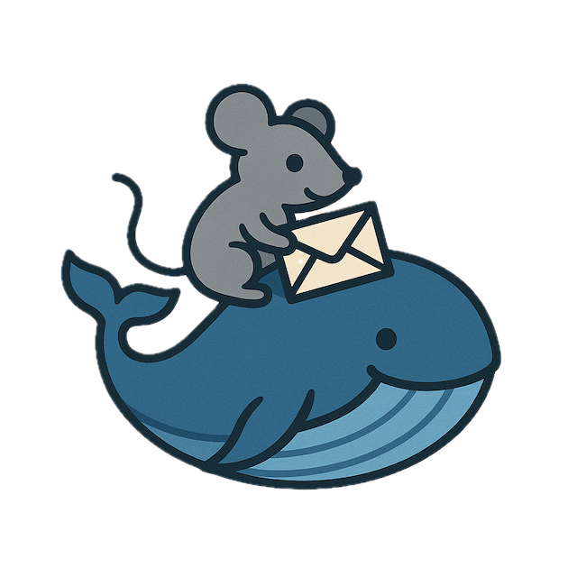

docker-mailserver Documentation

docker-mailserver is a containerized email server solution inspired by the ISPMail guide. It provides a secure, customizable email infrastructure that runs on Docker or Kubernetes.
Overview
This project enables you to operate your own email services, providing independence from large email providers. The solution is built on Alpine Linux and vendor base images, keeping container images lightweight while maintaining comprehensive functionality.
Key Features
- Email Protocols: POP3, IMAP, and SMTP with user authentication
- Web Management: Web-based interface for account, domain, and alias administration
- Webmail: Integrated webmail interface
- External Mail Retrieval: Fetchmail integration for retrieving emails from external providers
- Email Authentication: DKIM message signing for email authenticity
- Spam Filtering: Server-side mail filtering with configurable rules via web frontend
- Spam Training: Train spam filters by moving emails to or from the junk folder
- Real-time Protection: RBL (Real-Time Blackhole List) integration for spam prevention
- Greylisting: Selective greylisting for likely spam
- Address Management: Support for catch-all addresses and send-only accounts
- Security: Sender address restrictions and configurable address extensions
- Quota Management: Email quota management with notifications
- TLS: Enforced TLS for secure communication
- Full-Text Search: FTS support for efficient message searching
- Health Monitoring: Continuous self-monitoring via Docker healthcheck
Quick Start
- Installation Guide - Get started with Docker or Kubernetes deployment
- Upgrade Guide - Upgrade procedures and version migration notes
Service Architecture
The mailserver consists of multiple microservices:
- MTA (Mail Transfer Agent) - Postfix for SMTP
- MDA (Mail Delivery Agent) - Dovecot for IMAP/POP3
- Web - Admin interface and Roundcube webmail
- Filter - RSpamd for spam filtering
- SSL - Certificate generation and management
- Database - MySQL for user and configuration data
- Redis - Caching and session storage
- Unbound - DNS resolver for the filter service
- Fetchmail - External mail retrieval (optional)
See Architecture Documentation for detailed information.
Getting Help
- GitHub Issues - Report bugs and request features
- Releases - View release notes and changelog
Container Images
Container images are available at:
Component References
- Dovecot Documentation
- Postfix Documentation
- Rspamd Documentation
- Roundcube Documentation
- Redis Documentation
- Unbound Documentation